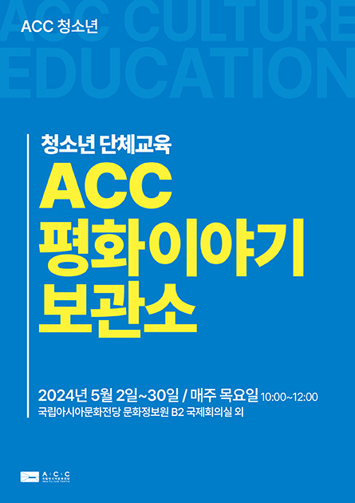

로그인
오시는 길
Language
ACC 안내
이용안내
공간안내
예매안내
대관안내
채널 ACC+
VR안내
공연
공연 일정
공연 소개
창제작 공연
기획 공연
대관 공연
전시
현재전시
전시 일정
예정전시
지난전시
온라인전시
어린이문화원 전시
전시 소개
행사
행사 일정
행사 소개
하우펀
월드뮤직페스티벌
ACT 페스티벌
아시아문학페스티벌
ACC 국제학술행사
기타행사
로고
교육
교육 일정
교육 소개
ACC 배움인
ACC 전문인
ACC 청소년
어린이 교육
ACC 교육발굴
ACC 국제교육협력
ACC 교육자료
ACC 사업
주요사업
국제교류
국내교류
아시아문화박물관
도서관
창제작
ACC 레지던시
ACC소식
전체소식
채용공고
보도자료
발간자료
오월이야기 퍼즐
ACC이야기
행사갤러리
참여마당
FAQ
ACC소개
전당소개
인사말
연혁
안전경영
시설소개
ACC 건축의 역사
상징(CI)
ACC 글꼴
ACC Logo Song
ACC 일정 65
공연 10
전시 13
행사 13
교육 16
어린이 13
+

ACC 청소년
ACC 평화이야기 보관소
2024.5.2(목) ~ 5.30(목)
2024 ACC 초이스
남성창극 ‘살로메’
2024.5.30(목) ~ 5.31(금)
ACC 수요 극장
‘그날, 그날에’
2024.6.5(수)
특별열람실 프로그램
<수요 아카이브 클럽 6월>
2024.6.5(수)
들려줘, 아라비안 나이트
2024.4.13(토) ~ 6.9(일)
ACC 양반극장
<사랑방 손님과 어머니>
2024.6.13
주차안내
고객지원시설
ACC 공간안내
대관안내
VR투어
채널 ACC
ACC 컬쳐숍
공지
채용
+
ACC 전문인 <직군탐색> 지역문화전문인...
2024.5.17
아시아문화박물관 상설전시실1 CCTV 설...
2024.5.16
5/18 기념 주간 국립아시아문화전당 추...
2024.5.13
2024 ACC 공연 레지던시 사업 공모 최...
2024.5.10
ACC 브런치콘서트 <영화 속 선율>
2024.5.10
국립아시아문화전당 공무원 채용 최종합...
2024.6.5
국립아시아문화전당 공무직 채용 면접시...
2024.6.3
국립아시아문화전당 공무직 채용 서류전...
2024.5.27
국립아시아문화전당 기간제 근로자 채용...
2024.5.24
국립아시아문화전당 기간제 근로자 서류...
2024.5.17
ACC 보도자료
+
“민주, 인권, 평화 ‘오월 정신’ 함께 나눠요”
2024.5.31
춤의 성소에서 만나는 남아시아 전통춤
2024.5.30
“도심 속 정원으로 여행 떠나볼까”
2024.5.27
ACC, 옛전남도청복원지킴이 어머니와 5.18
2024.5.24
유네스코 세계문화유산, ACC서 만나다
2024.5.17
ACC 알리미
+